Research Literacy: A Comprehensive Guide
A practical, step-by-step guide to research literacy: how to find scholarly articles, manage them in Zotero, read and annotate them (including AI-assisted strategies), and cite sources correctly. Written for my undergraduate statistics students, but useful to anyone who wants to evaluate evidence for themselves.
Three skills almost nobody is taught directly: finding scholarly articles in the databases built for it, getting past paywalls, and keeping everything organized and citable in Zotero. Plus how to actually read a paper: how to tell whether a source is even trustworthy, and where AI helps versus where it'll steer you wrong. Built from real scenarios and before-and-after examples, it takes you from a scattered pile of PDFs to a library you can search and cite from.
- Real-World Research Literacy Vignettes
- What Do I Mean by 'Articles'?
- Is This Source Actually Trustworthy?
- What Is Reference Manager?
- Databases: Your Best Tool for Finding Articles
- Actually Getting the Paper (Bypassing the Paywall)
- Getting Articles Onto Zotero
- Organizing Your Zotero Library
- Reading and Annotation Strategies
- AI-Assisted Reading and Analysis
- Using Zotero to Cite Articles in Microsoft Word
- Putting It All Together
Finding the actual research behind a claim --and figuring out whether it holds up --is one of the most useful skills you can pick up, and almost nobody teaches it directly. So that's what this guide is for.
The three core skills you will master are:
- Using academic databases to find and download scholarly articles
- Using Zotero reference management software to organize and cite sources
- Reading and analyzing academic articles (including AI-assisted strategies)
Why Should You Care About Research Literacy?
Research literacy isn't just an academic skill --it's a life skill that will serve you throughout your career and personal decision-making.
Think about it --every day you make decisions based on information:
- Should you trust that health article your aunt shared on Facebook?
- Which treatment should you choose?
- What career path makes sense?
- Is that study about coffee being good for you actually reliable?
Real-World Research Literacy Vignettes
Question: Think of a recent decision you made based on information you found online (health advice, product purchase, career choice, etc.). How did you decide whether that information was trustworthy? What criteria did you use?Before we dive into the technical skills, let's look at vignettes (brief scenarios, usually with an educational purpose) where these abilities make a real difference in your life:
Family Health Crisis
Your grandmother is diagnosed with early-stage dementia. Instead of panicking or relying on scary Google results, you systematically research evidence-based interventions. You search medical databases for studies on cognitive training, dietary interventions, and lifestyle modifications. You compile a comprehensive Zotero library of treatment options and use AI to summarize findings about promising therapies. You present your family with organized, credible information that helps guide care decisions.
Skills demonstrated: Medical database navigation, systematic literature organization, evidence synthesis
Debunking Misinformation
Your relatives keep sharing questionable health claims on social media. Instead of getting into arguments, you quickly find peer-reviewed sources that address these claims. You organize counter-evidence in Zotero and share AI-generated summaries that present facts in accessible language. Your evidence-based approach changes minds with facts rather than friction, and family members start asking you to fact-check other claims they encounter.
Skills demonstrated: Rapid source verification, science communication, diplomatic evidence presentation
What Do I Mean by 'Articles'?
First, let's clarify terminology. A 'paper', a 'publication', a 'journal article', and a 'study' are all basically the same thing. (Sometimes I call them 'pubs' for short --mainly because it makes them sound cute and approachable.)
Academic articles have a specific structure and purpose:
- They report original research or systematic reviews of existing research
- They go through peer review, where other experts evaluate the work before publication
- They follow standardized formats with abstracts, methodology sections, results, and conclusions
- They include comprehensive reference lists citing previous work
- They're written primarily for other researchers and experts in the field
This is different from:
- News articles (written for general public, may misinterpret research)
- Blog posts (often opinion-based, not peer-reviewed)
- Wikipedia entries (helpful for background but not primary sources)
- Commercial websites (may have conflicts of interest)
Example Comparison: Good vs. Poor Sources
GOOD SOURCE EXAMPLE:
- Title: "The effectiveness of mindfulness-based stress reduction in college students: A randomized controlled trial"
- Journal: Journal of American College Health
- Authors: Dr. Sarah Johnson (PhD, Psychology, State University), Dr. Michael Chen (MD, Psychiatry, Medical Center)
- Publication: 2023, Vol. 71, Issue 4, pages 412-425
- Peer review: Yes (noted in journal description)
- Methodology: Clear description of randomized controlled trial with 200 participants
- Funding: National Institute of Mental Health grant (conflict of interest statement included)
POOR SOURCE EXAMPLE:
- Title: "Meditation totally cures stress - here's proof!"
- Website: StressFreeLiving.com
- Author: Jennifer (no credentials listed)
- Publication: Blog post, last week
- Peer review: No
- Methodology: Personal anecdotes and testimonials
- Funding: Sells meditation courses and supplements
Understanding these distinctions is crucial for finding reliable, credible information.Question: What makes peer-reviewed articles different from blog posts or news articles? List three key differences.
Examples of articles
Here are three examples of academic articles.
- Acklin, C., Gault, R. Effects of natural enrichment materials on stress, memory and exploratory behavior in mice. Lab Anim 44, 262-267 (2015). https://doi.org/10.1038/laban.735
- Silvan R. Urfer, Mansen Wang, Mingyin Yang, Elizabeth M. Lund, Sandra L. Lefebvre; Risk Factors Associated with Lifespan in Pet Dogs Evaluated in Primary Care Veterinary Hospitals. J Am Anim Hosp Assoc 1 May 2019; 55 (3): 130-137. doi: https://doi.org/10.5326/JAAHA-MS-6763
- Fischer D, Lombardi DA, Marucci Wellman H, Roenneberg T (2017) Chronotypes in the US Influence of age and sex. PLoS ONE 12 (6): e0178782. https://doi.org/10.1371/journal.pone.0178782
Notice that these citations all have a link to a website that ends in doi.org. DOI stands for "digital object identifier", and an article's DOI code is a permanent link to where the most recent version of that article can be found online.
Academic articles are often hard to access:
- They're often inaccessible due to paywalls... however, I will show you how to get them anyway!
Is This Source Actually Trustworthy?
Finding a scholarly article is only half the job. You still have to judge whether it holds up, and peer review helps but doesn't guarantee anything. A few things worth checking:
- Predatory journals. Some "journals" will publish almost anything for a fee, with little or no real peer review. Warning signs: aggressive email solicitations, promises of very fast publication, unclear fees, an editorial board you cannot verify, or a title that mimics a well-known journal. When in doubt, check whether the journal is in the Directory of Open Access Journals (DOAJ) or indexed in PubMed or Web of Science.
- Preprints. Preprints (on servers like bioRxiv, medRxiv, PsyArXiv, or arXiv) are posted before peer review. They're useful for seeing new work early, but they haven't yet been vetted by other experts --treat their conclusions as provisional, and say so if you cite them.
- Retractions. Papers are sometimes retracted for error or misconduct and yet keep getting cited as if nothing happened. Before you lean on a study, make sure it hasn't been retracted --look for a retraction notice on the journal page, or search the paper at Retraction Watch.
None of it takes long once it's a habit. It's also the difference between actually being research-literate and just collecting sources that already agree with you.
What Is Reference Manager?
A note on the Zotero screenshots below: Zotero 7 (released in 2024) refreshed the interface, so your version may look a little different from these images. The steps work the same way.
- Zotero is an example of a reference managing software (reference manager), so you already have some inkling or what a reference manager is made for.
Question: Currently, how did you keep track of sources when writing essays in college? What problems have you encountered?Here's the formal definition:
"A reference manager is a software package that allows scientific authors to collect, organize, and use bibliographic references or citations....Most reference managers offer tools for organizing the references into folders and subfolders. Some reference managers allow the inclusion of full-text papers in PDF format."
Key features of a reference manager:
- Central location to collect your articles (never lose track of a useful source again!)
- A way to organize them into folders and subfolders by topic or project
- Automatic retrieval of metadata (author, title, journal, year, etc.)
- Platform for reading and annotating your articles with highlights and notes
- Word plugin that lets you easily cite articles while writing papers (also works in Google Docs)
- Automatic bibliography generation in any citation style (APA, MLA, Chicago, etc.)
- Generally speaking, reference managers make the research process easier by automating the boring and frustrating parts, like manually typing all the citations when writing a paper.
What Did People Do Before Reference Managers?
The old way was a nightmare:
- Handwritten index cards for each source (seriously!)
- Messy computer folders full of PDFs with cryptic names like "journal.pone.0217513.pdf"
- Manually typing every citation in papers
- Losing track of sources and having to search for them again
- Manually formatting bibliographies and risking citation errors
- No way to easily switch between citation styles
Before and After Example:
BEFORE ZOTERO (THE NIGHTMARE):
- Desktop folder: "Research Papers" with 247 files named things like:
- "document1.pdf"
- "journal.pone.0217513.pdf"
- "depression_study_maybe_2019.pdf"
- "GOOD_ARTICLE_READ_THIS.pdf"
- Word document with manually typed references (inconsistent formatting)
- Lost the Hebert 2020 study and spent 45 minutes trying to find it again
- Realized bibliography has wrong journal name, had to fix 12 citations manually
AFTER ZOTERO (THE DREAM):
- Organized collections: "Mental Health Research", "Statistics Papers", "Thesis Sources"
- Each source has complete, accurate metadata
- Search for "Hebert mindfulness" instantly finds the article
- Generate perfect APA bibliography with one click
- Switch to MLA format for different class - takes 3 seconds
Here's what a messy "before" folder of PDFs looks like:
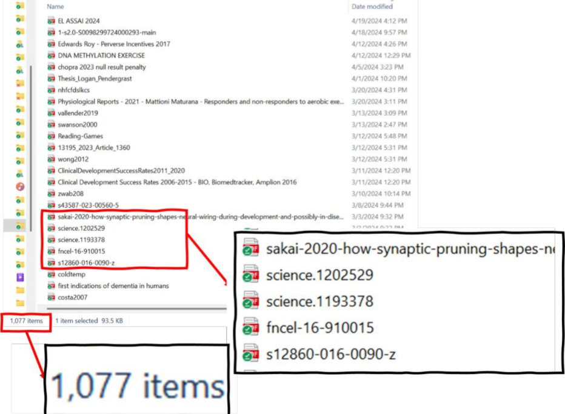
Personal example: A few years ago, I wrote a review article that ended up with 233 references in the final bibliography. The Zotero folder I used for this writing project actually had 559 articles that I had collected and organized during the research process. I literally do not know how I could have managed this project without Zotero. But Zotero is ALSO the best choice for smaller research projects --even for papers with 5-10 sources, the time savings and organizational benefits are substantial.Question: Based on what you just read, what's the biggest problem that reference managers solve? How would this help you personally in your coursework?
Databases: Your Best Tool for Finding Articles
A database refers to a specialized search engine for finding academic articles. (You can find articles using a regular Google search, but it will never be as comprehensive as if you used a database for the same search.)
Google Scholar: The Starting Point
Google Scholar (https://scholar.google.com/) is like Google's academically-minded cousin. It's free, familiar, and a great starting point for academic research.
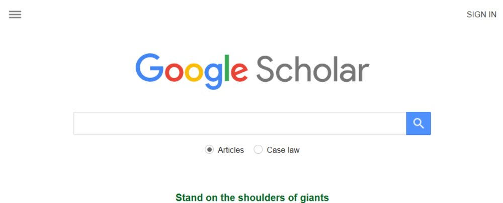
Here is an example search:
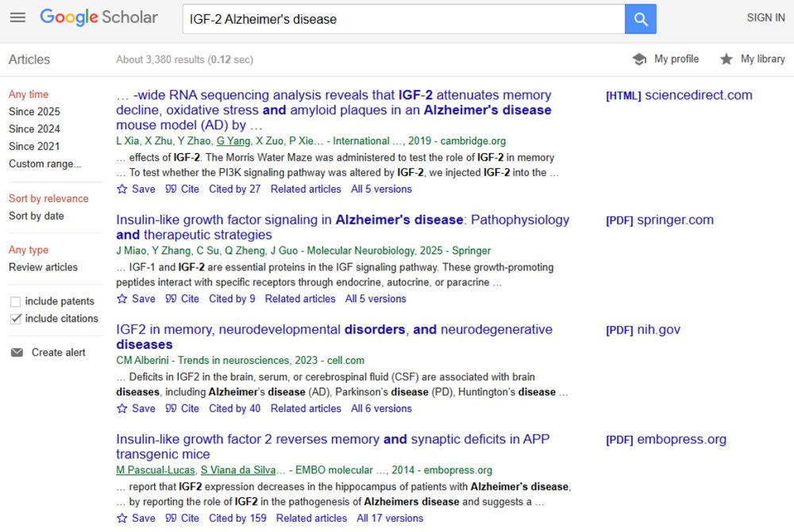
Let's look at a specific entry on the list of results to see what information we're given:
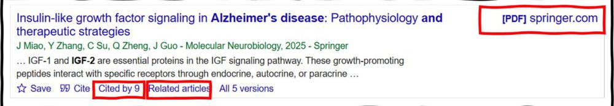
Cited by: Click here to see which articles have cited this article
- This is useful for seeing how others have built on the work done in this article. If the article was very significant for your research question, then the work that cited it might also be relevant.
- Once here, click on the checkbox to "search within citing articles" to do a more specific search,
Related articles:
- Google Scholar will suggest articles that have similar content, or were written by the same authors. If a particular article is very relevant to your research project, these results will likely be relevant, as well.
[PDF]:
- If there is a PDF available for this article, the link is given here.
- If there is no PDF, just click on the title to get to the webpage where the article was published.
Key features of Google Scholar:
- Searches across academic publishers, university repositories, and preprint servers
- "Cited by" links show how many other papers have cited this work (impact indicator)
- "Related articles" helps you find similar research
- "All versions" shows different versions of the same work
- PDF links when freely available
- Library links through institutional access
Strengths:
- Familiar interface reduces learning curve
- Comprehensive coverage across disciplines
- Good for getting an overview of a topic
- Excellent for following citation trails
Limitations:
- Less precise than specialized databases
- Limited search filters compared to academic databases
- May include lower-quality sources mixed with high-quality ones
Google Scholar Search Results Example:
GOOD RESULT INDICATORS:
✓ Title clearly states research focus
✓ Authors have institutional affiliations listed
✓ Journal name is recognizable in your field
✓ "Cited by 47" indicates impact
✓ [PDF] link available for full text
✓ Recent publication date
QUESTIONABLE RESULT INDICATORS:
⚠ No author credentials visible
⚠ Published on unknown website
⚠ "Cited by 0" with older publication date
⚠ Spelling and grammar errors
PubMed: The Medical and Psychology Powerhouse
PubMed (https://pubmed.ncbi.nlm.nih.gov) is maintained by the National Library of Medicine and is the go-to database for health and psychology research.
Search strategies:
- Basic search: Just type terms like you would in Google
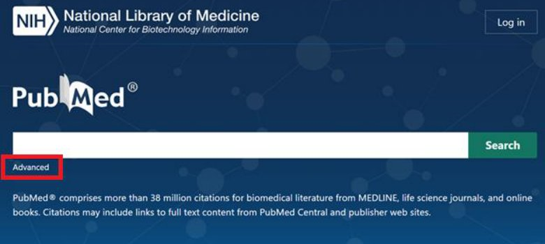
- Advanced search: Use the builder for more precise queries
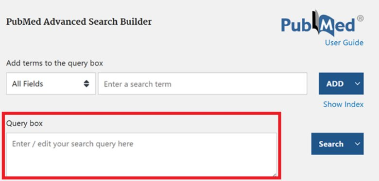
- Boolean operators: AND, OR, NOT to combine search terms effectively (more on this below)
BOOLEAN SEARCH QUICK REFERENCE CARD:
| OPERATOR | PURPOSE | EXAMPLE |
|---|---|---|
| AND | Both terms must appear | anxiety AND meditation |
| OR | Either term can appear | college OR university |
| NOT | Exclude this term | therapy NOT medication |
| "quotes" | Exact phrase match | "cognitive behavioral therapy" |
| * | Wildcard for variations | meditat* (finds meditate, meditation, meditative) |
| () | Group terms together | (anxiety OR stress) AND (college OR university) |
- You don't have to memorize these operators to get started --the databases handle a lot automatically, and you can layer them in later to sharpen a search.
PRO TIP: Ask AI tools like Copilot, ChatGPT or Claude for help developing search terms. For example: "I want to research the effectiveness of mindfulness meditation for anxiety in college students. What would be a good PubMed search query?"EFFECTIVE SEARCH EXAMPLE:
- Topic: Effect of exercise on depression in young adults
- Basic search: exercise depression young adults
- Better search: (exercise OR "physical activity") AND depression AND ("young adult*" OR "college student*")
- Advanced search: Include filters for age group (19-24), article type (clinical trial), publication date (last 5 years)
Your Library's Databases
Question: Create a Boolean search for this research question: "How does exercise affect academic performance in college students?" Write your search using AND, OR, and parentheses. (Feel free to use AI!)Through your college or university library, you likely have access to premium databases most people can't reach for free. Your institution almost certainly offers something similar to what's below:
Off-campus access: every school has its own version --search "off-campus access" plus your school's library to find yours, then follow the instructions to reach the databases from home.
Databases your school likely offers (the names below are a representative example --your own list will look similar):
- Academic Search Complete: General academic database covering multiple disciplines
- MEDLINE: Medical and health sciences literature
- JSTOR: Arts, humanities, and social sciences with historical depth
- PsycINFO: Psychology and behavioral sciences
- Business Source Premier: Business and economics research
These databases often have more sophisticated search tools and higher-quality content than free resources.
Actually Getting the Paper (Bypassing the Paywall)
So you've found a paper that looks perfect. You click it, but get hit with a paywall: "$39.95 to read this article." Do not ever pay! Almost every paper you'll ever need can be gotten free and legally --you just have to know the right tools and techniques. Here they are, easiest first:
- Install the Unpaywall extension. Unpaywall is a free browser extension run by a nonprofit. Once it's installed, whenever you land on a paywalled article a little green tab appears on the side of your screen if a free, legal copy exists somewhere. This is often sufficient to locate the article.
- Try the Open Access Button. openaccessbutton.org does the same job and, if no free copy exists yet, it will automatically email the author to request one on your behalf. (I'd still recommend reaching out to the author with a more personalized email, but if you're trying to access multiple articles this automated messaging is more convenient.)
- Check Google Scholar's "All versions." Search the title in Google Scholar. If there's a free PDF anywhere, you'll often see a [PDF] link on the right, or a free copy under the "All versions" link beneath the result. There is frequently a copy of the article in a separate repository.
- Look for the preprint. Increasingly, authors post their manuscript for free before the journal publishes it, on servers like bioRxiv, medRxiv, PsyArXiv, arXiv, or SSRN. For most papers the preprint is nearly identical to the published version. Google the title plus "preprint".
- Use your school's access. If you're affiliated with a university library, they may subscribe to the journal that contains your desired article. Many libraries now use LibKey, which will take a DOI and route you straight to your institution's copy. To access from home, every school has an "off-campus access" option (a library proxy or VPN) --search "off-campus access" plus your school's library and follow their instructions. After setting it up once, journal sites will recognize you as a subscriber.
- (Advanced: if you're comfortable with a command line.) There's a free, open-source tool called fetch-pdf-from-doi --built by my friend and collaborator, Dr. Dan Elton --that automates all of the above at once: you give it a DOI (or a whole list of them) and it searches the major legal open-access sources (Unpaywall, OpenAlex, PubMed Central, CORE, Semantic Scholar, Crossref) and grabs the free copy if one exists. It needs a bit of setup (Python), so it's more of a power-user tool --but if you ever need to pull dozens of papers at once, it's a lifesaver. (I used it to assemble the literature for a meta-analysis of several hundred studies.)
- Just ask the author. Believe it or not, researchers are usually thrilled that someone wants to read their work, and will be delighted to send you the paper if asked. From their perspective, another reader means another opportunity to get a citation. Send an email to the corresponding author, or --if it's an older resource --look up the first author on Google to find a working email address. For example: "Dear Dr. [Name], I'm a [student, researcher] interested in your [Year] paper on [topic] but can't access it through my library. Would you be willing to share a copy? Thank you!"
(Shadow libraries like Sci-Hub and Anna's Archive exist and are widely used, but they operate in a legal gray area and I can't recommend relying on them. Fortunately, the legal options above will get you almost everything!)
Getting Articles Onto Zotero
If you want to familiarize yourself with Zotero before this section, I recommend the following tutorial videos:
- How To Use Zotero: A Complete Beginners Guide: https://www.youtube.com/watch?v=BvpELw2NW-o
- Zotero Makes Citations Easy: https://www.youtube.com/watch?v=6OyX1umFQCE
So you've downloaded the PDFs that seem relevant to your research project. How do you get them into your Zotero library?
There are several ways to add items to your Zotero library:
- ZOTERO BROWSER EXTENSION: Many people will tell you that the best way to get items into your Zotero library is through the Zotero browser extension, which lets you click an icon when looking at a journal article to automatically add it to your library. It will download the PDF as well, if it is available.
- The reason I personally don't like it is because the PDF is not always available! Without the PDF, the reference saved in Zotero is practically useless. This is why I recommend that you get the PDF first, and add it to Zotero
- DOI/IDENTIFIER LOOKUP: Click the "Add by Identifier" button (magic wand icon). Enter DOI, ISBN, or PubMed ID. Zotero automatically retrieves full metadata
- Like the browser extension, this method doesn't always get you the PDF. However, many people find it useful.
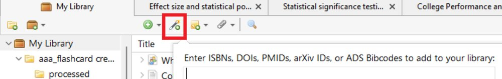
DRAG AND DROP PDFS:
- Drag a PDF file directly into your Zotero library
- Zotero attempts to extract metadata from the PDF
- Review and correct metadata (title, author, journal, year, etc) as needed
The rest of my instructions will assume that you are using the drag-and-drop method:
"If you add a PDF to Zotero it will try to retrieve the metadata about the PDF and turn it into a proper item in your library. This works for most academic PDFs. One way to do it is just to drag the PDF onto Zotero."York University Libraries. (n.d.). Home - Zotero - LibGuides at York University. https://researchguides.library.yorku.ca/zotero
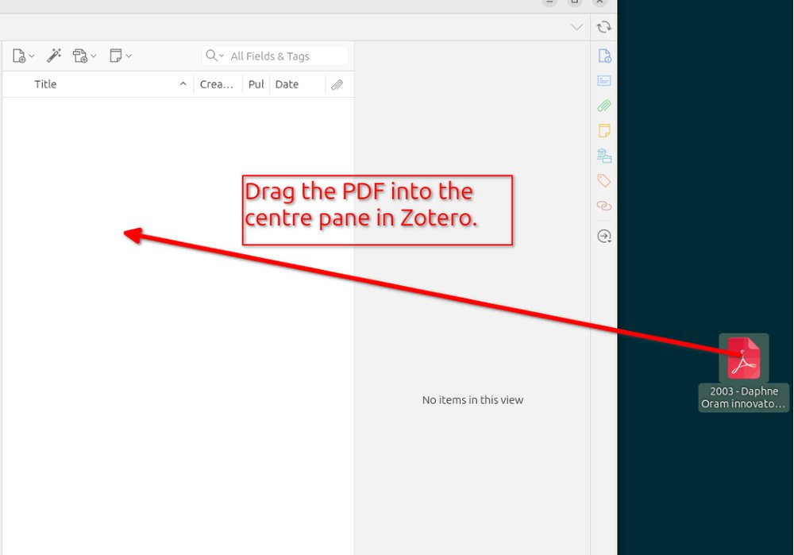
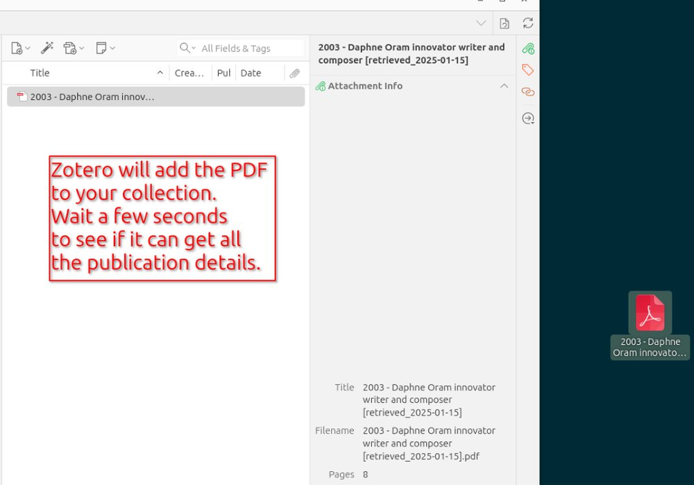
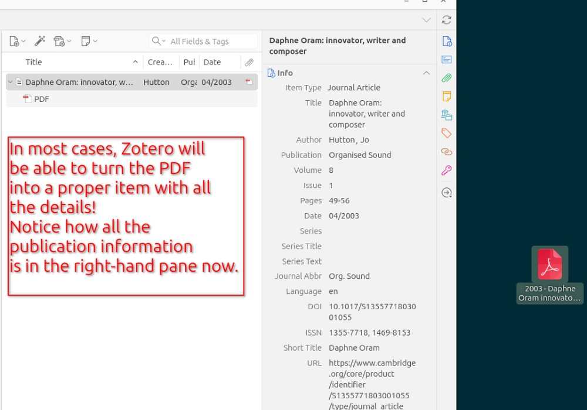
PDF Metadata Extraction Tips
Zotero is excellent with newer articles but sometimes struggles with older papers (often scanned documents). When metadata is incorrect or incomplete:
PRO TIP: If metadata is completely wrong, it's often faster to delete it and re-enter the essential information rather than trying to fix every field.You can edit the metadata using the panel on the right side of the Zotero window.
Essential metadata to verify:
- Authors (including proper name formatting)
- Title (including subtitles; use sentence case for academic articles)
- Journal name
- Publication year (not acceptance date)
- Volume and issue numbers
- Page numbers (article pages, not PDF pages)
- DOI (when available)
Non-essential metadata that can be deleted if incorrect:
- Abstract
- Keywords
- URLs
- Database-specific identifiers
Metadata Correction Example:
BEFORE CORRECTION (Zotero's automatic attempt):
Title: THE EFFECTIVENESS OF MINDFULNESS-BASED STRESS REDUCTION IN COLLEGE STUDENTS: A RANDOMIZED CONTROLLED TRIAL
Authors: JOHNSON, S.; CHEN, M.; WILLIAMS, R.
Journal: J Am Coll Health
Year: 2023
Volume: 71
Pages: 1-15
AFTER CORRECTION (Proper formatting):
Title: The effectiveness of mindfulness-based stress reduction in college students: A randomized controlled trial
Authors: Johnson, Sarah; Chen, Michael; Williams, Robert
Journal: Journal of American College Health
Year: 2023
Volume: 71
Issue: 4
Pages: 412-425
DOI: 10.1080/07448481.2023.1234567
Organizing Your Zotero Library
Collections and Folder Structure
Think of collections like playlists rather than traditional folders --items can belong to multiple collections without duplication.
Suggested organization strategies:
- By project: "PSYC 275 Term Paper", "Honors Thesis Research"
- By topic: "Sleep and Academic Performance", "Social Media Effects"
- By methodology: "Experimental Studies", "Meta-Analyses", "Qualitative Research"
- By status: "To Read", "Read and Annotated", "Cited in Paper"
Creating collections:
- Go to the "My Library" homepage
- Click the "New Collection" icon
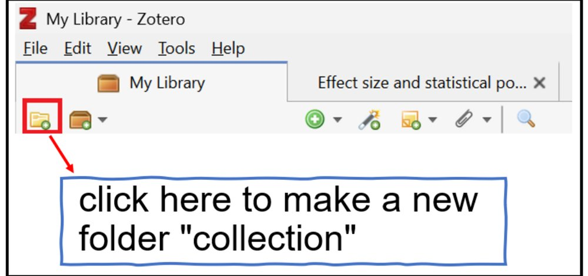
- Name your collection
- Drag items from main library into collections
Tagging System
Here is something I wish someone told me at the beginning of my research career: TAGS are often much more useful than sorting articles into folders. When you first get started, tags might not seem useful, but the further you go the more useful they become.
You can edit the tags in the right panel (the same place you edit the metadata). The "Tags" option is in a tab at the top of that right panel, as shown below:
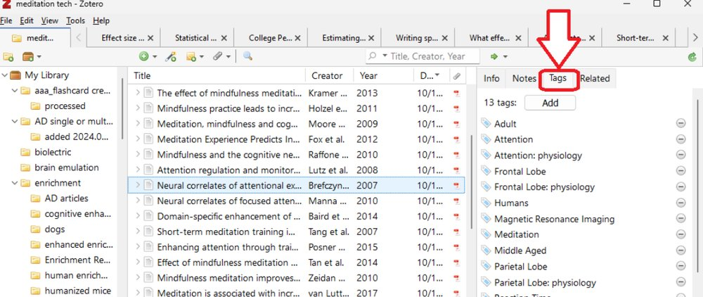
Use consistent tags to create cross-cutting categories:
- methodology: #experimental, #survey, #qualitative, #meta-analysis
- population: #college-students, #adolescents, #adults, #clinical
- key finding: #supports-hypothesis, #contradicts-theory, #mixed-results
- quality: #high-quality, #methodological-concerns, #preliminary
Zotero Organization Examples:
DISORGANIZED LIBRARY (AVOID THIS):
My Library (247 items)
- No collections
- Random mix of articles with no clear system
- Tags: "important", "good", "read this", "maybe"
- Many articles lack complete metadata, which makes them slower to find later, because Zotero's search relies on that metadata
WELL-ORGANIZED LIBRARY (AIM FOR THIS):
My Library (247 items) ├── PSYC 275 - Statistics Course (15 items) ├── Mental Health Research (87 items) │ ├── Depression Studies (34 items) │ ├── Anxiety Research (28 items) │ └── Treatment Interventions (25 items) ├── Thesis Research - Social Media (92 items) ├── Career Preparation (18 items) └── To Read Later (35 items)
Tags: #experimental, #meta-analysis, #college-students, #high-quality, #needs-review
Search for a specific article takes 30 seconds
Reading and Annotation Strategies
Traditional Reading Approach
- For important papers, follow this systematic approach:
- Read the abstract to understand main findings
- Scan section headings to understand structure
- Read introduction for background and hypotheses
- Examine methodology to assess quality
- Focus on results and statistical analyses
- Read discussion for interpretation and limitations
- Check references for additional sources
- Here are two interactive guides to reading academic articles that I highly recommend for beginners:
- Scholarly Article Reading: https://ncu.libwizard.com/f/scholarlyarticle2
- Article Analysis Archive: https://www.lib.ncsu.edu/tutorials/scholarly-articles/archive/
Annotation in Zotero
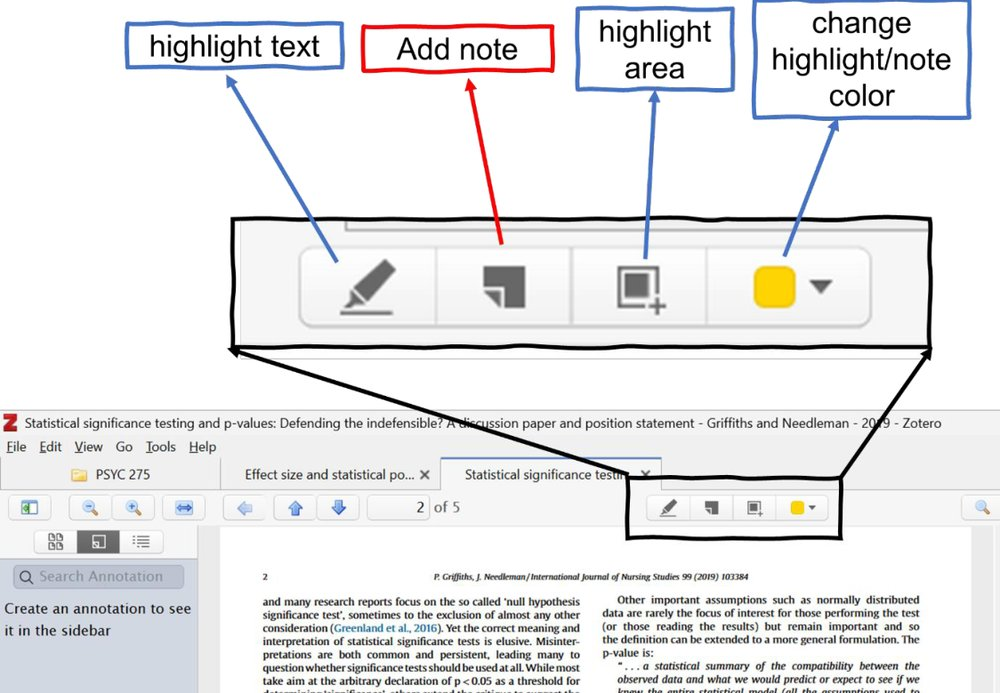
Zotero's PDF reader allows you to:
- Highlight text in different colors
- (use consistently: for example, yellow for key findings, blue for methodology, red for limitations)
- Add sticky note comments with your thoughts and connections
- When you make annotations, they will appear in the search results in Zotero along with the other articles across your entire library
Effective annotation strategies:
- Summarize each section in your own words
- Note connections to other readings
- Identify methodological strengths and weaknesses
- Record questions for further investigation
- Mark quotable passages for potential use in papers
Annotation Example:
- ARTICLE SECTION: "Results showed that participants in the mindfulness group had significantly lower stress scores (M = 3.2, SD = 1.1) compared to the control group (M = 4.8, SD = 1.3), t(98) = 6.45, p < .001, d = 1.3."
- GOOD ANNOTATION: "Large effect size (d=1.3) suggests meaningful practical difference, not just statistical significance. Compare to Johnson 2019 study which found smaller effect (d=0.7) - possibly due to shorter intervention period?"
- POOR ANNOTATION: "Good results"
AI-Assisted Reading and Analysis
- AI tools can significantly enhance your reading comprehension and efficiency when used appropriately.
Effective AI Applications
PDF summarization:
- "Please summarize this research article for an undergraduate student. Focus on the main research question, methodology, key findings, and practical implications."
Methodology explanation:
- "This study uses structural equation modeling. Can you explain what this statistical technique does and why the researchers chose it for this research question?"
Jargon translation:
- "This paper discusses 'neuroplasticity' and 'synaptic pruning.' Can you explain these concepts in simpler terms and why they're relevant to the study?"
Connection identification:
- "I've been reading about social media and mental health. How does this study relate to other research on this topic? What are the key themes I should look for?"
Finding PDFs in Your System
- When you want to share an article's PDF with an AI, you unfortunately cannot copy it directly from the Zotero window. You need to locate the PDF in your computer's file system, and then share that version.
- To locate PDFs stored by Zotero:
- Right-click on any item with a PDF attachment
- Select "Show File"
- Your file manager opens to the PDF location
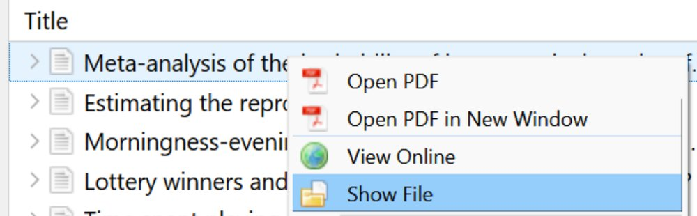
- This is useful when you want to share PDFs with other people.
AI Conversation Example:
- STUDENT: "Can you summarize this study about mindfulness and stress for me?"
- AI RESPONSE: "This study examined whether mindfulness meditation reduces stress in college students. The researchers randomly assigned 100 students to either an 8-week mindfulness program or a waitlist control group. They measured stress levels before and after using validated questionnaires. Results showed the mindfulness group had significantly lower stress scores with a large effect size (d=1.3), suggesting the intervention was highly effective. The study was well-designed with random assignment and good statistical power."
AI Limitations to Remember
- Many AI models cannot access current research beyond its training data cutoff. However, ChatGPT and Claude have a function called "web search" that can use search engines to find anything currently on the internet.
- AI may occasionally "hallucinate" fake citations or misinterpret findings. Although the newer AI models do this less often than they once did, they are still prone to making up quotes, results, and whole citations!
- AI summaries may miss nuanced arguments or context important to specialists.
- AI should supplement, not replace, your own critical thinking and analysis
Best practices:
- Always verify AI-generated information against the original source
- Use AI to understand concepts, not to replace careful reading
- Develop your own understanding rather than relying solely on AI interpretation
Using Zotero to Cite Articles in Microsoft Word
Before discussing how to use Zotero to cite in Word, I wanted to share a quick way of grabbing a few citations if those are all you need. (For example, you want to cite one or two articles in an email or social media post.)
Quick Citations
- There is a quick way to get the citation for a specific article (or group of articles) in Zotero. If you know this trick, it could save you a lot of time!
- For informal citations or email references:
- Select item(s) in Zotero
- Press Ctrl+Shift+C (Cmd+Shift+C on Mac)
- Paste the formatted reference anywhere (for an in-text citation instead, use Ctrl+Shift+A / Cmd+Shift+A)
PDF Text Extraction Tips
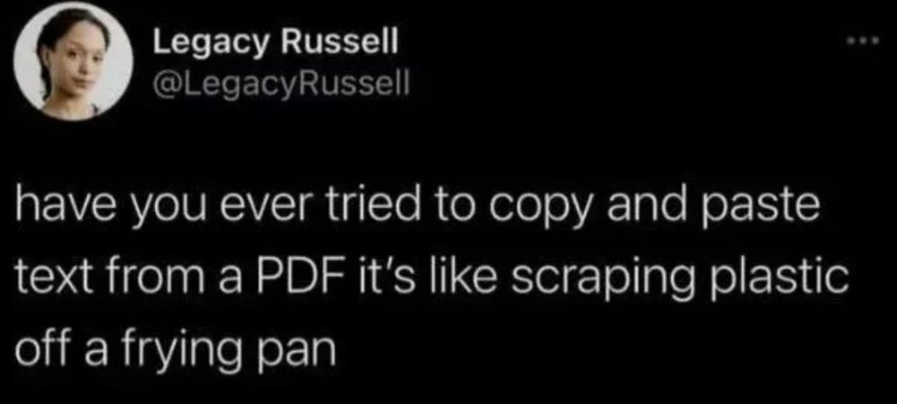
For example, when I copy this...
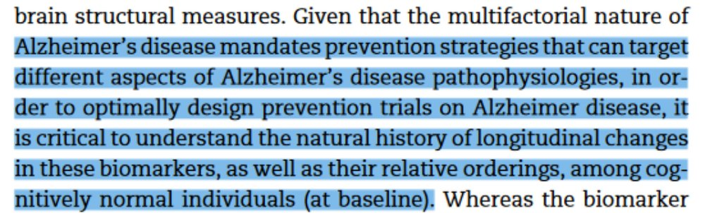
...and try pasting it into a new document, I get this:
Alzheimer’s disease mandates prevention strategies that can target
different aspects of Alzheimer’s disease pathophysiologies, in or-
der to optimally design prevention trials on Alzheimer disease, it
is critical to understand the natural history of longitudinal changes
in these biomarkers, as well as their relative orderings, among cog-
nitively normal individuals (at baseline).
Do you see how the lines don't extend all the way to the end of the line? It is as if someone pressed the Enter key at the end of each line. This is a quirk with copying-and-pasting from PDFs, and to my knowledge there is no workaround.
Quick solution: Remove Line Breaks Online Tool
https://www.textfixer.com/tools/remove-line-breaks.php
Comprehensive solution: https://removelinebreaks.net/
These tools clean up PDF text extraction problems, making it easier to quote sources accurately in your papers.
Word Plugin Integration
The Zotero Word plugin transforms how you write research papers:
This section assumes you already have Microsoft Word and the Zotero tab in the Word ribbon.
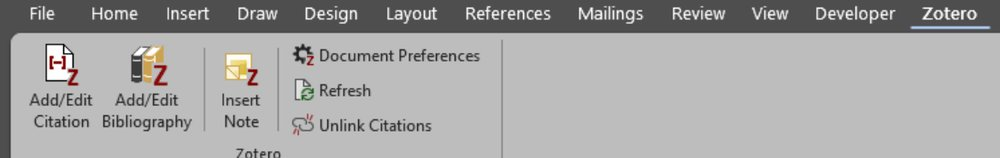
Using citations:
- Position cursor where you want citation
- Click "Add/Edit Citation" in Zotero tab
- Search for source by author, title, or year
- Select source by pressing Enter.
- When you make your first citation in a document, you are usually prompted to choose the citation style (APA, MLA, Nature, Chicago, etc).
- Now that you've added a source, you can add bibliography. Go to the end of your document and create a new section called References. Now go to the next line below the word References, and click "Add/Edit Bibliography" in the Zotero tab.
Style management:
- Switch between citation styles instantly (APA, MLA, Chicago, etc.)
- Customize citation formats for specific requirements
- Update all citations and bibliography automatically when changing styles
Citation Format Examples:
SAME SOURCE IN DIFFERENT STYLES:
APA FORMAT:
In-text: (Johnson et al., 2023)
Reference: Johnson, S., Chen, M., & Williams, R. (2023). The effectiveness of mindfulness-based stress reduction in college students: A randomized controlled trial. Journal of American College Health, 71(4), 412-425.
NATURE FORMAT:
In-text: ¹
Reference: Johnson, S., Chen, M. & Williams, R. The effectiveness of mindfulness-based stress reduction in college students: a randomized controlled trial. J. Am. Coll. Health 71, 412-425 (2023).
Personally, I prefer the Nature citation style when writing, and then I switch to the APA format whenever I need to share it with someone else. The superscripts make it easier to read/edit the document.Question: Do you prefer the APA or Nature citation format? 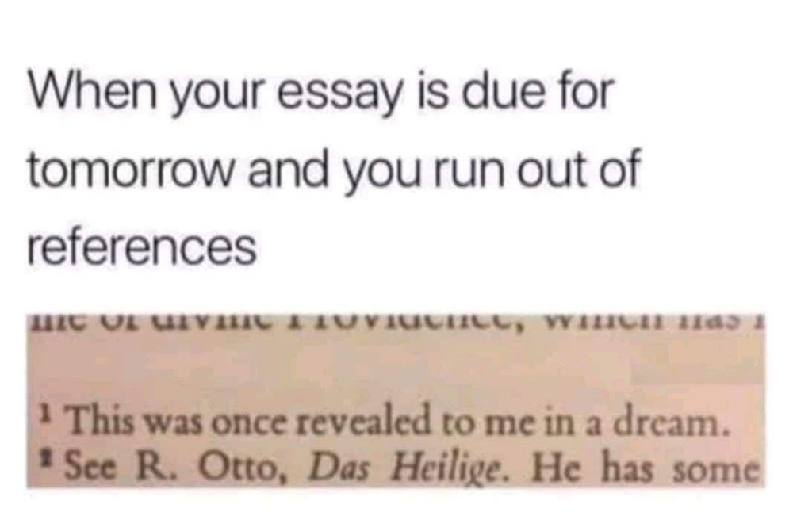
Putting It All Together
These three skills build on each other. Databases get you the evidence, Zotero keeps it organized and easy to cite, and reading carefully --with AI as an assistant, not an authority --is what turns all of it into something you actually understand. You don't have to do it all at once. Install Zotero, run one real search, and read one paper closely. Start there; the rest gets a lot easier.